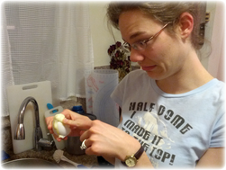

At the Beach in Phuket
2012 was a year of weddings for Brianna and Stephen Hicks. In addition to their own fabulous romantic affair in January, they had the pleasure of watching four other couples take their vows. The momentous occasions roused Brie out of retirement from public piano performances when she was asked to play at two of those weddings. Weddings are always a tough gig for the musicians but lovely to prepare for and recall after the fact. 
Brie with Alien Egg
Married life agrees with Brie and Steve. They never tire of spending time together and continue to introduce each other to classic books, movies, and TV shows that the other simply MUST see. The hot dates continue (Fact: dating is so much better AFTER you are married - less pressure, more fun) with Brie and Steve seeing live performances of plays, ballets, concerts, musicals, operettas and operas throughout the year. Their cute apartment in Menlo Park suits them perfectly and they enjoy hosting dinner parties there despite the perils inherent in the activity. The two quickly learned that meals simply cannot be ready before 7pm. They have had several cooking adventures including the infamous creme brulée incident (which resulted in lots of yummy meringues, but not much creme brulée), Brianna vs. the red wine bottle (interestingly both Brie and the wine bottle lost), and various versions of vegetarian chili (they seem to be missing something). Matching T-shirts from Bangkok
However, it was not all fun and games as Brianna endured a painful time with research early in the year with the failure of a project and lots of impending deadlines. Steve provided fantastic support and walked with her every step of the way to her oral defense at the end of August. Now research is progressing nicely and Brie is figuring out how to juggle work with several co-authors. Google continues to provide challenges and scope for Steve's talents. In addition to shepherding three college students through a summer intern program, Steve organized a summit in August for internal users to train them on the tools he has been developing. Drinking Coconut Milk in Thailand
When not working, Brie and Steve may be taking more dance classes, or doing some activity with InterVarsity Graduate Christian Fellowship at Stanford (where B is on steering and S is a small group leader). Steve has proved over and over how he is able to keep his cool in the face of grave danger as he teaches Brie to drive stick. Brie is getting the hang of it, but still can't seem to carry on a conversation and drive at the same time. They also became members of Grace Presbyterian Church. At the Top of Half Dome
The honeymoon in Thailand was the big adventure this year, but Team Hicks also managed to hike the back of Half Dome this summer. Brie narrowly survived an encounter with a marmot, but thankfully Steve was filming the incident and so got some hilarious footage to add to his collection of crazy moments with Brie. They also enjoyed some great visits with family including: Gwendolyn's (B's youngest sister) high school graduation, a family reunion, Thanksgiving in Tampa, first visits from both sets of in-laws, and an upcoming cruise to celebrate B's grandmother's 80th birthday. God has blessed them richly and continues to guide, protect, and provide. Brianna and Steve wish you blessings on your Christmas and New Year! "Shaken, not stirred"
|